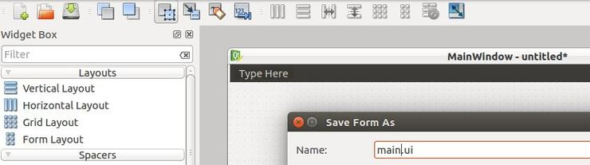

Есть два способа создания GUI приложений при помощи PyQt5:
В этом руководстве мы используем PyQt5 Designer, который упрощает процесс на столько, что вы можете выполнить большой объем работы за секунды.
Дизайнер PyQt5 поставляется вместе с набором инструментов. Для его установки, вам нужно установить эти инструменты.
$ pip3 install pyqt5-tools
Для текущего пользователя:
C:\Users\PythonUser\AppData\Local\Programs\Python\Python36-32\Lib\site-packages\ pyqt5-tools\
Для локального пользователя:
C:\Program Files\Python36\Lib\site-packages\pyqt5-tools\
Откройте designer.exe и увидите диалоговое окно, спрашивающее о том, какую форму шаблона вы предпочитаете.

Существует пять видов доступных шаблонов:
Итак, у нас есть три типа шаблонов. В чем между ними разница?
В данном руководстве мы используем PyQt5 Designer, но перед тем, как мы пойдем дальше, давайте рассмотрим, как еще мы можем использовать сгенерированный файл из PyQt5 Designer.
Нам нужно открыть PyQt5 Designer, выбрать шаблон Main Window и нажать кнопку create.
Далее в файловом меню (File), нажимаем сохранить. PyQt5 Designer экспортирует вашу форму в XML с расширением .ui.
Для использования этого дизайна, у вас есть два способа:
Чтобы загрузить файл .ui в ваш код Python, вы можете использовать функцию loadUI() из uic вот так:
from PyQt5 import QtWidgets, uic
import sys
app = QtWidgets.QApplication([])
win = uic.loadUi("mydesign.ui") # расположение вашего файла .ui
win.show()
sys.exit(app.exec())